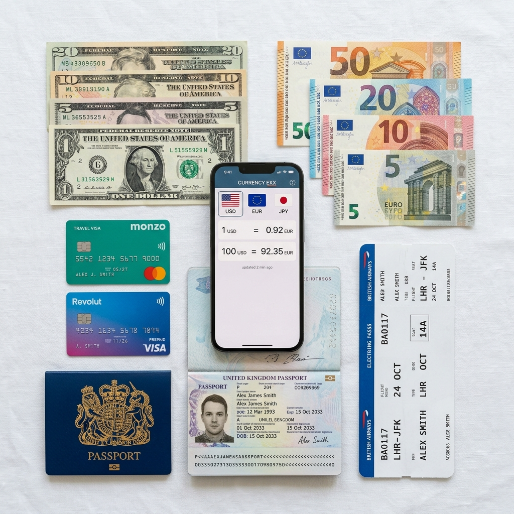
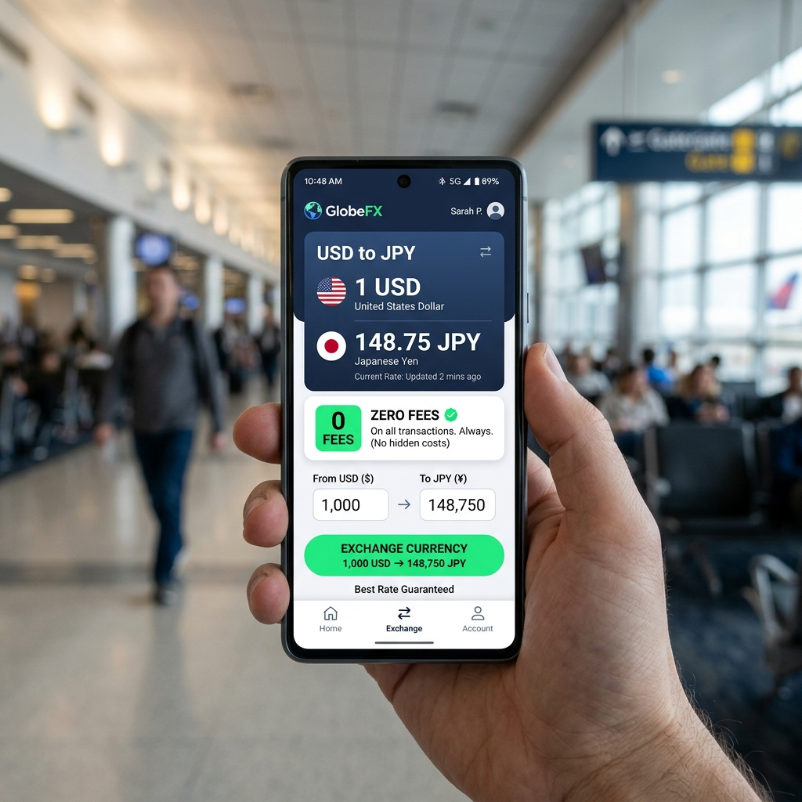
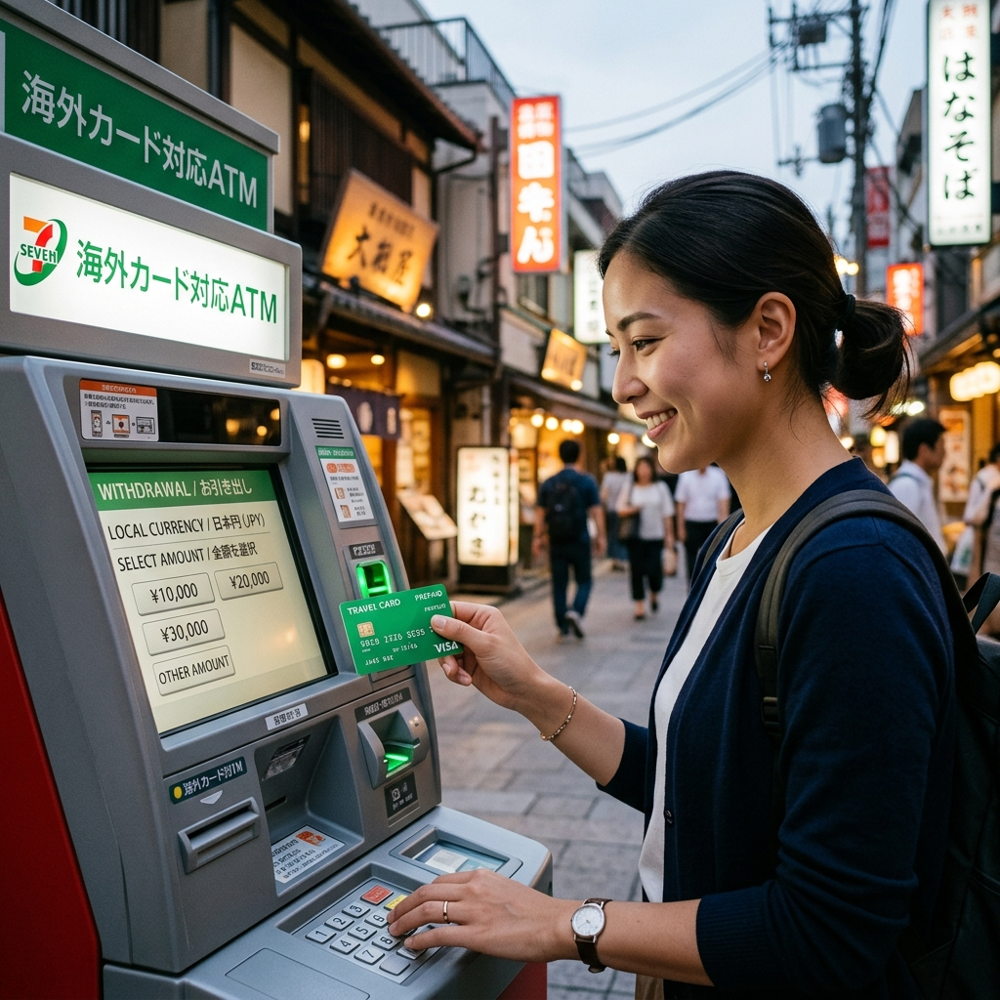

트래블카드 어떤 게 유리할까, 트래블월렛·트래블로그·토스뱅크 직접 비교해 봤습니다
일본 여행을 준비하면서 환전 방법을 고민하다가 트래블카드를 직접 써보기로 했습니다.
"수수료가 0이라는데 진짜야?" 반신반의하며 트래블월렛과 트래블로그를 각각 발급해서 같은 여행에서 비교해 봤습니다. 어느 쪽이 더 유리했는지, 아쉬웠던 점은 무엇인지 솔직하게 이야기해 드립니다.

해외여행 환전 준비물 — 트래블카드와 외화 / AI 제작 이미지
공항 환전을 그만두기로 한 이유
예전에는 출국 전날 은행 앱으로 예약 환전을 해두거나, 출국 당일 공항 환전소에서 환전했습니다. 90% 우대율 쿠폰을 챙기고, 환율 변동을 보면서 타이밍을 재는 게 나름 재미있기도 했습니다.
그러다 트래블카드의 수수료 0원 구조를 알게 됐습니다. 사실 은행 예약 환전 90% 우대도 환전 수수료의 90%를 할인해준다는 것이지, 환전 수수료 자체가 없는 건 아니었거든요. 달러 기준으로 계산하면 여전히 1~1.5% 수준의 수수료가 발생합니다.
트래블카드는 달러, 유로, 엔화 같은 주요 통화에서 환전 수수료 자체가 0%입니다. 단순 계산으로도 100만 원 환전 시 1~1.5만 원 차이가 납니다. 그게 쌓이면 한 끼 식사 값은 되는 거니 확실히 바꿀 이유가 있었습니다.
트래블월렛과 트래블로그 동시에 써봤더니
✍️ 직접 써본 경험
저는 하나은행 계좌가 있어서 트래블로그를 주카드로, 트래블월렛을 보조로 사용했습니다. 일주일 일본 여행 기준으로 총 40만 원 상당의 엔화를 사용했습니다.
결론부터 말하면 두 카드 모두 결제 거절 없이 잘 됐고, 환전 수수료도 정말로 0원이었습니다. 귀국 후 트래블월렛에 남은 엔화는 앱에서 즉시 원화로 환불했는데 추가 수수료 없이 바로 처리됐습니다.
트래블로그는 하나은행 계좌에서 충전이 편리했고, 하나ATM 앱과 연동되어 사용 내역 확인도 한 화면에서 됐습니다. 트래블월렛은 카드 앱이 직관적이고 충전·환불이 빨라서 보조용으로 유용했습니다.
트래블월렛 특징 — 은행 제한 없고 통화가 넓다
트래블월렛의 핵심 장점은 연결 계좌에 제한이 없다는 것입니다. 어느 은행 계좌든 연동해서 충전이 가능하기 때문에 접근성이 높습니다.
수수료 무료 통화는 달러(USD), 유로(EUR), 엔화(JPY)이고, 그 외 40여 개 통화도 0.5~2.5% 수준의 낮은 수수료로 지원합니다. 동남아, 중동, 중남미 등 다양한 국가를 여행하는 분이라면 트래블월렛 하나로 여러 나라 통화를 커버할 수 있다는 점이 편리합니다.
잔여 외화 즉시 환불도 강점입니다. 귀국 후 남은 외화를 앱에서 클릭 몇 번으로 즉시 원화로 환불할 수 있어, 귀국 후 환전소를 다시 찾아갈 필요가 없습니다.
트래블로그 특징 — 하나은행 고객에게 더 유리
트래블로그는 하나카드·하나은행이 결합된 서비스로, 하나은행 계좌 보유자에게 특히 강점을 가집니다.
수수료 무료 통화에 영국 파운드(GBP)가 포함된 것이 차별점입니다. 영국이나 아일랜드를 여행하는 분이라면 트래블로그가 유리합니다.
하나은행 ATM에서 충전이 편리하고, 하나은행 외화 우대율이 적용되어 환율 자체가 유리한 시점이 있기도 합니다. 기존 하나은행 앱과 연동이 잘 되어 사용 내역 관리가 편합니다.
단점은 하나은행 계좌가 없다면 발급 전 계좌 개설이 필요하다는 점입니다. 하나은행 계좌가 없는 분은 접근 단계가 하나 더 있습니다.

트래블카드 앱에서 수수료 0원으로 외화 환전 충전하는 화면 / AI 제작 이미지
토스뱅크는 어떤가 — 충전 없이 바로 쓰는 방식
토스뱅크 체크카드는 트래블카드와 다른 방식입니다. 미리 외화를 충전하는 게 아니라 토스뱅크 원화 잔액에서 실시간으로 결제 시 환전되는 구조입니다.
장점은 충전 과정 자체가 없어 준비가 매우 간편하다는 것입니다. 국제 브랜드 수수료(1~1.5%)도 면제됩니다.
단점은 환율이 결제 시점에 실시간으로 적용된다는 점입니다. 환율이 불리한 시점에 결제하면 손해가 납니다. 반면 트래블월렛·트래블로그는 환율이 유리할 때 미리 충전해두는 방식이라 환율 타이밍을 어느 정도 조절할 수 있습니다.
ATM 출금 — 현지 현금이 필요할 때
일본이나 동남아 일부 지역은 아직도 현금 사용 비중이 높습니다. 트래블카드로 현지 ATM에서 출금하는 방법이 가장 경제적입니다.
트래블월렛은 제휴 ATM에서 월 2,000달러 한도 내 무료 출금이 가능하고, 트래블로그는 제휴 ATM에서 월 일정 횟수 이내 무료 출금을 지원합니다.
한 가지 주의할 점은 현지 ATM 운영사가 별도 수수료를 부과하는 경우가 있다는 것입니다. 또 ATM에서 "원화로 계산하시겠습니까?" 묻는 'Dynamic Currency Conversion(DCC)' 화면이 뜨면 반드시 "현지 통화(로컬 커런시)로 출금"을 선택하세요. DCC를 선택하면 불리한 환율이 적용됩니다.
솔직한 단점 — 이런 점은 아쉬웠습니다
좋은 점만 이야기하는 것은 공정하지 않으니, 직접 써보면서 불편했던 점도 솔직하게 공유합니다.
트래블카드 공통 단점:
첫째, 충전을 미리 해야 합니다. 잔액이 0이 되면 결제가 안 됩니다. 여행 중 잔액이 부족해서 카드가 거절되는 당혹스러운 상황이 생길 수 있습니다. 충전은 여유 있게 해두는 게 좋습니다.
둘째, 국내에서 사용하면 혜택이 없습니다. 국내 결제에는 일반 체크카드나 신용카드가 훨씬 유리합니다. 트래블카드는 해외 전용으로 관리하는 것이 좋습니다.
셋째, 비주류 통화는 수수료가 있습니다. 트래블월렛도 46개 통화 중 달러·유로·엔화 외에는 0.5~2.5% 수수료가 있습니다. 특수한 국가를 여행할 경우 확인이 필요합니다.
남은 외화 처리 — 귀국 후 뭘 해야 하나
여행을 마치고 돌아오면 카드에 외화가 남아있을 수 있습니다. 처리 방법은 두 가지입니다.
원화로 즉시 환불: 트래블월렛은 앱에서 바로, 트래블로그는 앱 또는 하나은행 앱에서 처리됩니다. 추가 수수료 없이 현재 환율로 원화 환불이 됩니다.
다음 여행을 위해 보유: 남은 외화를 카드에 그대로 두었다가 다음 해외여행에 사용할 수 있습니다. 달러나 유로처럼 다시 쓸 일이 생길 통화라면 보유하는 것도 방법입니다. 단, 카드 유효기간 만료 전에 사용하거나 환불해야 합니다.

해외 현지 ATM에서 트래블카드로 현금 출금하는 모습 / AI 제작 이미지
결국 어떤 카드를 쓰면 될까
긴 비교 끝에 내린 결론을 정리하면 이렇습니다.
하나은행 계좌가 있고 주로 미국·유럽·일본을 다니는 분 → 트래블로그
하나은행 계좌가 없거나 동남아·다국가 여행자 → 트래블월렛
준비를 최소화하고 싶고 짧은 여행이면 → 토스뱅크 체크카드
두 카드를 모두 발급해서 통화에 따라 나눠 쓰는 것도 좋은 전략입니다. 발급 비용이 거의 없거나 무료라서 부담이 크지 않습니다.
📝 작성자 메모
트래블카드를 처음 쓸 때 '정말 수수료가 0이 맞나?' 영수증을 몇 번이나 확인했습니다. 결제 후 앱 알림에 "수수료 0원" 표시가 나오는 것을 보고 나서야 믿게 됐습니다.
이미 공항 환전을 습관처럼 해오셨다면, 다음 여행 전에 한 번만 트래블카드를 시도해 보시길 권합니다. 발급에 시간이 걸릴 수 있으니 출국 2주 전에는 신청하는 것이 좋습니다.
#트래블월렛후기
#트래블로그비교
#해외여행환전팁
#트래블카드추천
#수수료없는환전
#해외카드결제
#일본여행준비
#토스뱅크해외
#여름해외여행
#ATM현금출금